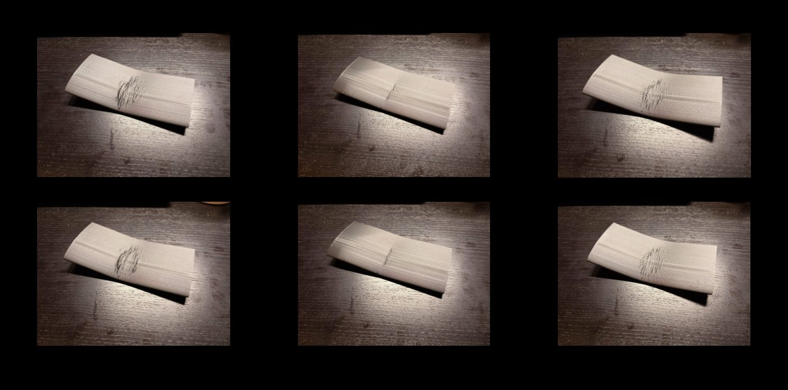
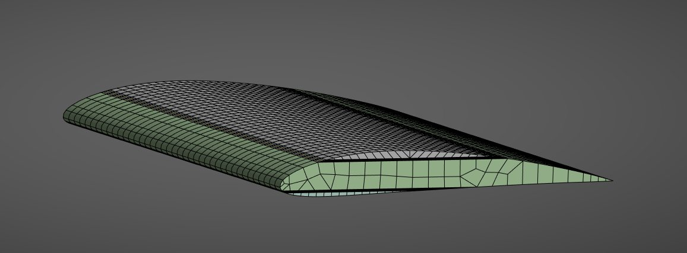
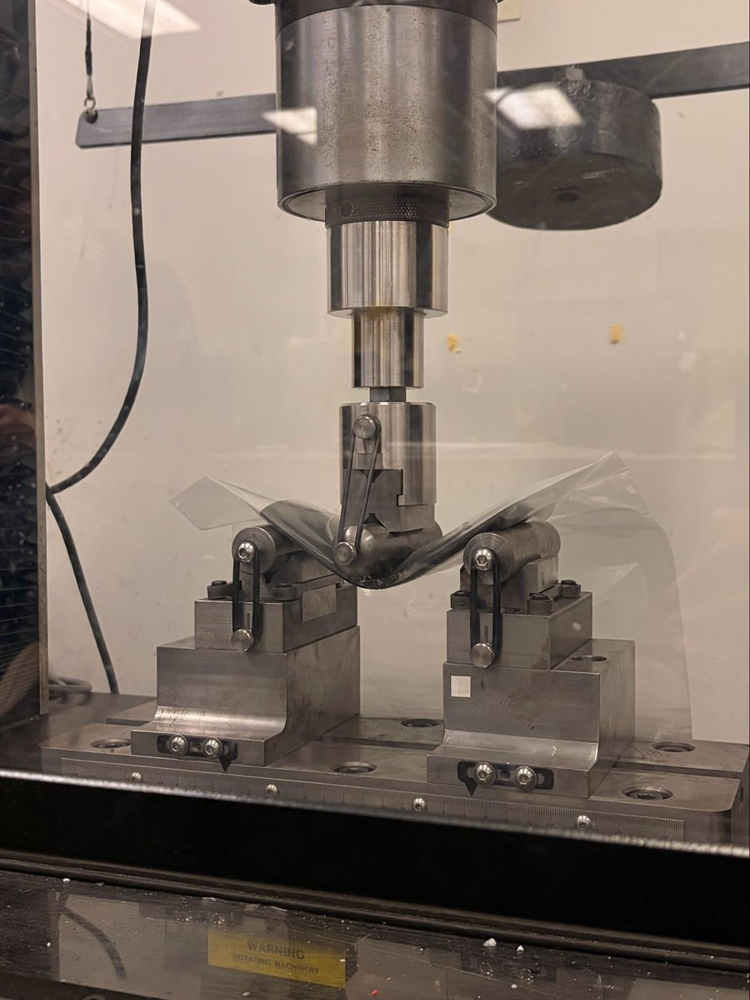
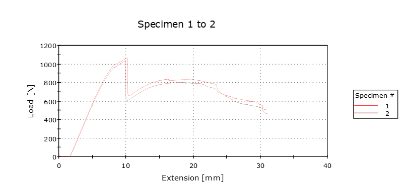
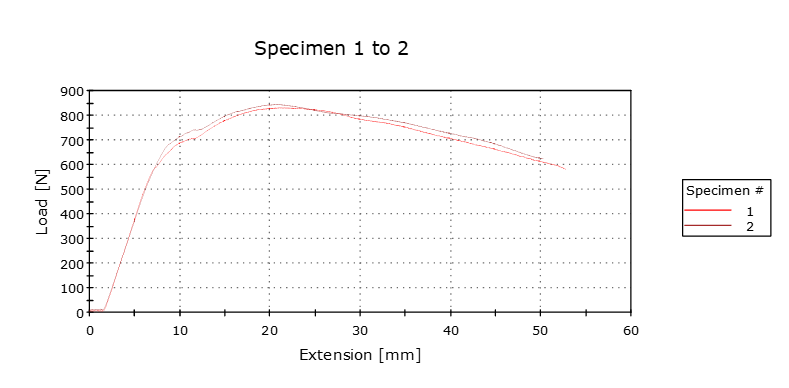
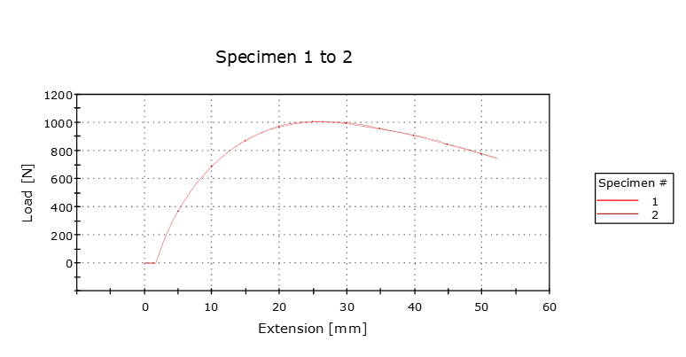

3D-printed composite airfoils: strength vs. cost
We printed identical NACA 2412 airfoils reinforced with three continuous fibres (carbon fiber, fiberglass and Kevlar, all in an Onyx matrix), simulated them in ANSYS, broke them in three-point bending, and weighed the results against what each one cost to make.

The project
With the airfoil geometry held fixed, how much does the reinforcing fibre actually change structural behaviour, and is the best-performing fibre worth its cost? We started out planning wind-tunnel tests. But at 6 × 3 inches the printed airfoils were too small for reliable aerodynamic data, so we refocused on bending performance, failure behaviour and manufacturing cost.
What we did
- Manufacturing: printed on a Markforged X7 with the same 37% triangular infill for all three. Fibre was biased toward the upper and lower surfaces at the same heights in every part. Two specimens per material, limited by budget.
- FEA: a layered composite model in ANSYS with orthotropic properties for each fibre. Ends were fixed and a point load applied at mid-span to mirror the bend test.
- Testing: three-point bending on an Instron at 3 mm/min (derived from ASTM D790 for a 127 mm span), recording load against extension.



What the curves showed
- Carbon fiber: the stiffest. It peaked early (~1050 N at 10 mm), then dropped sharply, but held 600–800 N afterwards.
- Fiberglass: more compliant and degraded gradually, peaking at ~840 N past 20 mm.
- Kevlar: the least stiff but very ductile. It reached ~1000 N at 25–30 mm and still carried over 750 N past 50 mm, absorbing the most energy.



| Fibre | Peak load | Print cost (2 parts) | Cost per airfoil |
|---|---|---|---|
| Carbon fiber | ~1.07 kN | $59.31 | $21.66 |
| Kevlar | ~1.01 kN | $41.29 | $20.65 |
| Fiberglass | ~0.84 kN | $65.22 | $32.61 |
Kevlar came out as the best balance for a printed airfoil such as a drone wing: nearly carbon fiber's peak load, much more energy absorbed, and the lowest cost. All three took about 17 hours to print a pair.
What I learned
The biggest lesson from this project was that the test fixture is part of the experiment. As the airfoils bent, they nearly touched the V-blocks holding the support rollers, which added load spikes and stopped us from loading them to full fracture. Because of that, we treated our results as a comparison between materials rather than true failure strengths, and a fixture with more clearance is the first thing I would change.
I also learned the value of scoping a project to what you can actually measure. Our original plan included wind tunnel testing, but once we saw the models were too small for reliable data, refocusing on bending and cost gave us a cleaner study. Comparing our simulations with the physical tests was eye-opening too. The FEA ranked fiberglass as deforming the least, while the bend tests showed carbon fiber was the stiffest, which showed me how much material inputs and modeling assumptions matter. In the end, the best material depended on the job, and Kevlar's balance of strength, energy absorption and cost made it the standout for a printed airfoil.